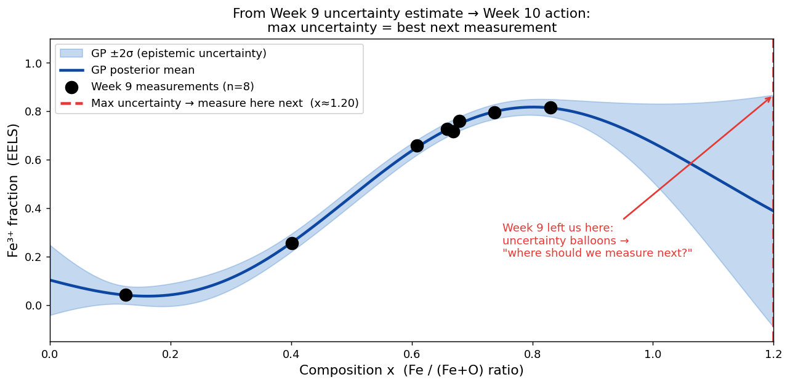
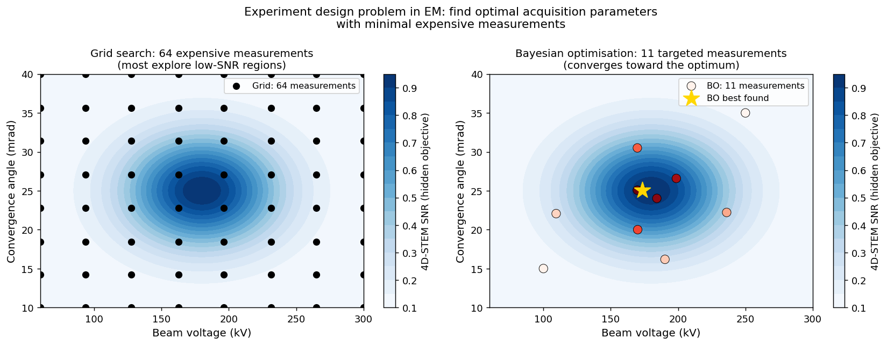
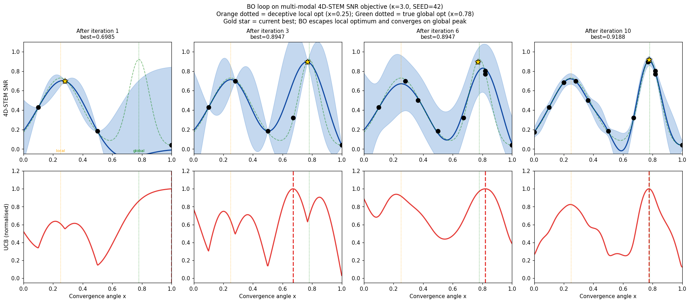
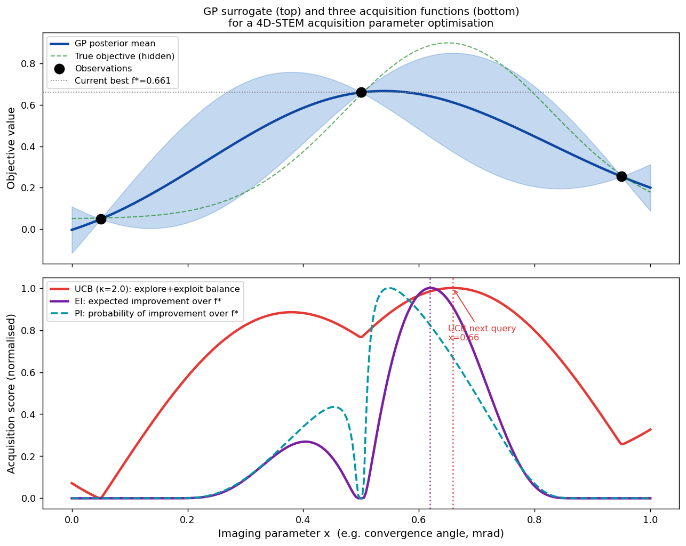
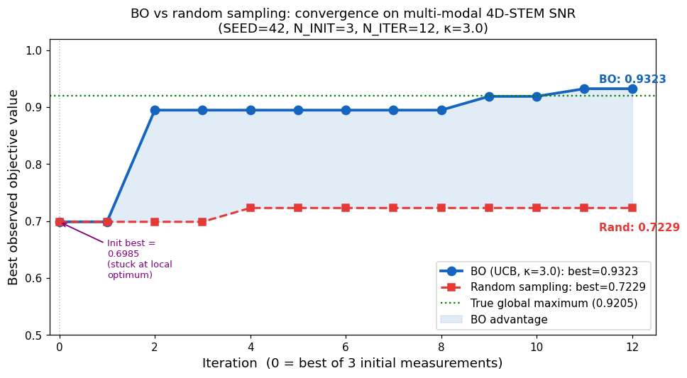
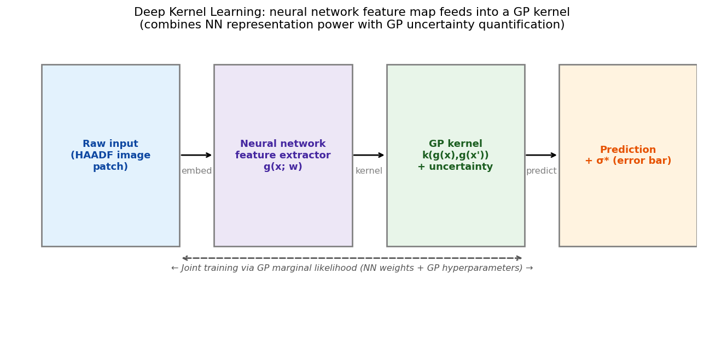
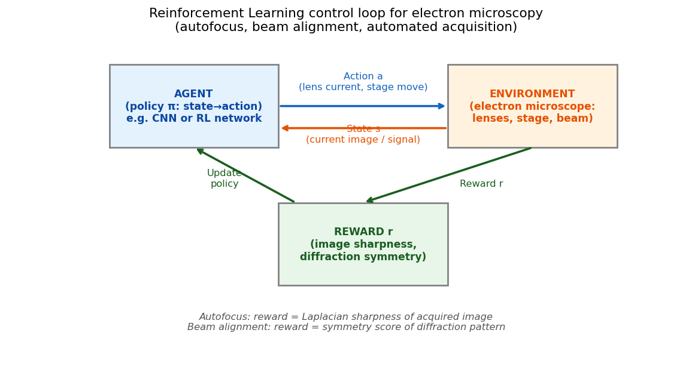
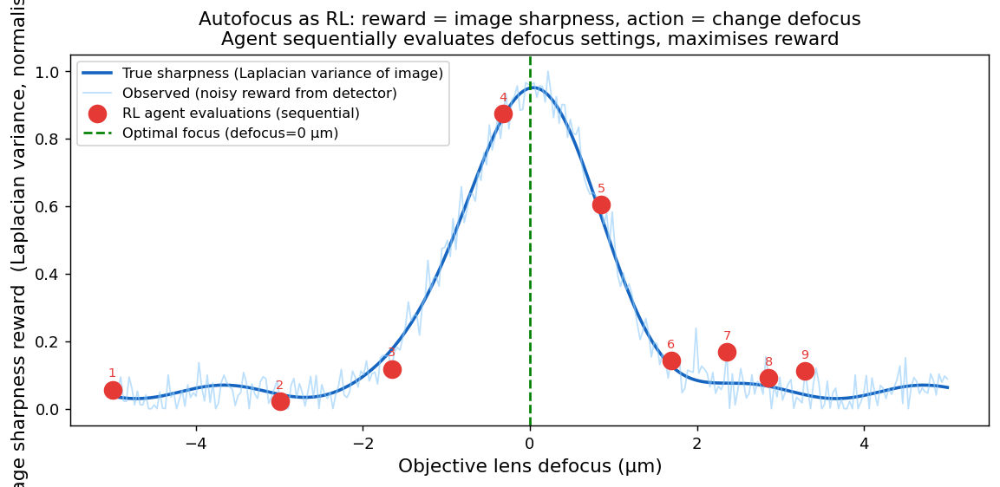

Data Science for Electron Microscopy
Week 10: Active & automated electron microscopy
FAU Erlangen-Nürnberg
Institute of Micro- and Nanostructure Research


Recap: Week 9 and today’s question
- Week 9: Gaussian processes give calibrated uncertainty bands — the GP posterior mean \(\mu^*(x)\) is our best prediction and \(\sigma^*(x)\) is an honest error bar that widens where we have no data.
- The linchpin from Week 9: “uncertainty balloons away from data.” At \(x=1.15\) (far from any measurement) \(\sigma^* = 0.197\); at \(x=0.66\) (near data) \(\sigma^* = 0.015\) — a 13.5× difference. The GP is telling us something urgent: go measure there.
- Today’s question: how do we turn that uncertainty signal into a principled action? We have a budget of expensive EM measurements — which ones should we make next?
- Today’s answer: Bayesian optimisation (BO) — a closed loop that uses the GP uncertainty to decide where to measure next, collect that measurement, update the GP, and repeat.
- Forward link to Week 11: once autonomous acquisition collects data, we face the inverse problem — reconstructing structure from those measurements. That is the Imaging Inverse Problems arc (Weeks 11–12).
Road map and self-study
- Road map: recap Week 9 + today’s question (2) · from uncertainty map to next measurement (3) · experiment-design problem in EM (3) · Bayesian optimisation loop: surrogate + acquisition + measure + update (4) · acquisition functions: EI / UCB / PI as explore–exploit scores (5) · BO in practice for EM (4) · deep kernel learning: NN feature map + GP head (3) · automated / self-driving 4D-STEM (4) · automation as control: sensors, actuators, feedback (3) · reinforcement learning framing: agent, environment, reward (4) · autofocus & beam alignment as RL (4) · the autonomous-lab vision, limits & risks + forward link (2) — 41 content slides + References slide.
- Self-study:
notebooks/week10_bayesian_optimization.ipynb— implement a 1-D BO loop from scratch (GP surrogate + UCB acquisition, sklearn, CPU, < 60 s); show BO finds the optimal 4D-STEM parameter on a multi-modal objective in 12 iterations, escaping a deceptive local optimum (best found: 0.9323 vs random 0.7229); exercise: vary the UCB \(\kappa\) (exploit vs explore) and the acquisition function (EI).
From uncertainty map to “where to measure next”

Week 9 GP posterior on 8 EELS measurements of Fe³⁺ fraction. The ±2σ band (blue) balloons beyond x≈0.85 — the GP is maximally uncertain there. The dashed red line marks the position of maximum uncertainty: the GP is actively recommending this as the next measurement site. Week 10 turns this observation into a principled algorithm.
The explore–exploit dilemma in EM
- Pure exploration (always go to max-\(\sigma^*\)): covers the space efficiently, builds a global uncertainty map. Useful for active learning — fitting an accurate surrogate everywhere.
- Pure exploitation (always go to max-\(\mu^*\)): concentrates effort near the current best guess. Useful when finding the optimum quickly is more important than mapping the whole space.
- The EM reality: both goals coexist. We want to find the imaging parameter that maximises a target property (exploitation) while reducing uncertainty enough to trust the result (exploration).
- Acquisition functions balance both: they assign a score \(\alpha(x)\) to every candidate measurement \(x\) that trades off the predicted value \(\mu^*(x)\) against the uncertainty \(\sigma^*(x)\). Measure next at \(x^* = \arg\max_x \alpha(x)\).
Active learning vs Bayesian optimisation: two goals
- Active learning (Week 7 connection): label the most uncertain training examples to build an accurate global model with few labels. Goal = fit the function everywhere. Strategy = always explore (maximise \(\sigma^*\)).
- Bayesian optimisation: find the maximum of an expensive function with as few evaluations as possible. Goal = find the optimum, not map the whole function. Strategy = balance explore and exploit.
- Same GP, different acquisition function: active learning uses \(\alpha(x) = \sigma^*(x)\) (pure exploration). BO uses \(\alpha(x) = \mu^*(x) + \kappa\sigma^*(x)\) (UCB) or EI — both incorporate the predicted value.
- EM example: active learning is right for building a complete Fe³⁺ fraction map across all compositions. BO is right for finding the synthesis condition that maximises Fe³⁺ fraction, when you only need the best setting, not the whole map.
- Both are sequential, adaptive, and GP-powered. Shahriari, Bobak et al., (2016)
The experiment-design problem in EM
- The EM budget: a single EELS measurement at one composition takes 1–8 h of sample preparation + instrument time. A 4D-STEM map at one (voltage, angle) combination: 20–60 min. A total budget of 10–20 measurements is realistic; 100 is prohibitive.
- The parameter space: a (S)TEM experiment has 50+ adjustable parameters (voltage, convergence angle, collection angle, dwell time, scan density, tilt, …). A 10-point grid per parameter would require \(10^{50}\) measurements.
- The consequence: random or grid search is statistically hopeless. Even uniform coverage of a 2-D parameter slice requires ~100 measurements to achieve ±5% resolution — already beyond a typical PhD project’s budget.
- Bayesian optimisation is the mathematical answer: it models the unknown objective with a GP and uses the GP uncertainty to decide where to spend the next measurement, maximising information per unit cost. Shahriari, Bobak et al., (2016)
Grid search vs BO: visualising the advantage

Left: a 64-measurement grid search uniformly samples the (beam voltage × convergence angle) parameter space — most measurements fall in the low-SNR blue region. Right: Bayesian optimisation with 11 targeted measurements (red-to-yellow circles) converges toward the true optimum (gold star, ≈180 kV, 25 mrad) by actively choosing where to sample next. Grid search wastes budget on uninformative regions; BO concentrates effort where it matters.
What makes an objective function “BO-friendly”?
- Expensive to evaluate: each function call costs significant time or money. BO is worthless for functions evaluatable in milliseconds (use gradient descent instead).
- No closed form: we cannot write \(f(x)\) symbolically. The only way to know \(f(x_0)\) is to measure it.
- Reasonably smooth: the GP surrogate assumes nearby inputs give similar outputs (RBF kernel encodes this). Discontinuous functions or functions with extreme oscillation break the GP prior.
- Low-to-moderate dimensionality: exact GPs scale as \(O(N^3)\) in observations and struggle with \(> 10\)–20 input dimensions. For higher dimensions, use DKL (later today) or sparse GPs.
- In EM: almost every experimental objective satisfies these properties — process parameters vs material property, acquisition setting vs image quality. Shahriari, Bobak et al., (2016)
The Bayesian optimisation loop
- Initialise: collect a small number of measurements at random (or Latin-hypercube) locations. Fit a GP surrogate to these initial points.
- Evaluate acquisition function: compute \(\alpha(x)\) over all candidate locations using the current GP posterior \((\mu^*, \sigma^*)\). Find \(x_\text{next} = \arg\max_x \alpha(x)\).
- Measure: perform the actual (expensive!) EM experiment at \(x_\text{next}\). Record the objective value \(y_\text{next}\) (e.g., image contrast, diffraction symmetry score).
- Update: add \((x_\text{next}, y_\text{next})\) to the dataset. Refit the GP (update \(\mu^*\) and \(\sigma^*\) everywhere). Return to step 2.
- Terminate: when budget is exhausted. Report \(x^+ = \arg\max_i y_i\) — the best observed parameter setting.
BO loop in action: 4 snapshots

Four snapshots of the BO loop optimising a multi-modal 4D-STEM acquisition parameter (SEED=42, κ=3.0). Blue region: GP ±2σ. Blue line: GP mean. Dashed red vertical: next query chosen by the UCB acquisition function (red dotted, scaled). Green dotted: true global optimum (x≈0.78). Orange dotted: deceptive local optimum (x≈0.25). Gold star: current best observed point. By iteration 10 the loop has escaped the local optimum and concentrated measurements near the true global peak. Shahriari, Bobak et al., (2016)
The surrogate model: why GP?
- Requirement 1 — uncertainty quantification: the acquisition function needs both \(\mu^*(x)\) and \(\sigma^*(x)\). A GP provides both analytically, at every point, in closed form.
- Requirement 2 — data efficiency: with only 3–20 EM observations, we cannot train a deep neural network. The GP is non-parametric — it adapts its complexity to the data, no layer-count decisions needed.
- Requirement 3 — analytic acquisition: UCB and EI have closed-form expressions in terms of \(\mu^*\) and \(\sigma^*\). This makes the inner optimisation (find \(\arg\max_x \alpha(x)\)) fast — just evaluate on a dense grid, no gradient descent.
- Limitations: \(O(N^3)\) cost (fine for \(N \leq 500\) EM measurements); sensitive to kernel choice; struggles in \(> 10\) input dimensions. For image-patch inputs, use DKL (later today). Rasmussen, Carl Edward et al., (2006)
The GP posterior: what BO needs from the surrogate
- Posterior mean \(\mu^*(x^*)\): the best estimate of the objective value at the candidate location \(x^*\). From Week 9: \(\mu^*(x^*) = \mathbf{k}_*^\top (\mathbf{K} + \sigma_n^2 \mathbf{I})^{-1}\mathbf{y}\).
- Posterior standard deviation \(\sigma^*(x^*)\): our uncertainty about the objective value. From Week 9: \(\sigma^{*2}(x^*) = k(x^*,x^*) - \mathbf{k}_*^\top (\mathbf{K} + \sigma_n^2 \mathbf{I})^{-1}\mathbf{k}_*\).
- Key insight for BO: \(\sigma^*(x^*)\) is large where we have not yet measured (unexplored regions) and small where we have measured (explored regions). The acquisition function uses this to decide where information is most needed.
- The inner loop: after each new observation \((x_\text{next}, y_\text{next})\), the GP is updated: \(\mathbf{K}\) gains a new row and column; the matrix inverse is updated (Cholesky update in practice — \(O(N^2)\), not \(O(N^3)\)). Rasmussen, Carl Edward et al., (2006)
The acquisition function: formalising explore vs exploit
- Upper Confidence Bound (UCB): \[\alpha_\text{UCB}(x) = \mu^*(x) + \kappa\,\sigma^*(x)\] \(\kappa\) controls the balance: \(\kappa=0\) is pure exploitation (go to highest mean); \(\kappa\to\infty\) is pure exploration (go to highest uncertainty). Typical default: \(\kappa=2\).
- Expected Improvement (EI): \[\alpha_\text{EI}(x) = (\mu^*(x) - f^+ - \xi)\,\Phi(Z) + \sigma^*(x)\,\phi(Z), \quad Z = \frac{\mu^*(x)-f^+-\xi}{\sigma^*(x)}\] \(f^+\) = current best observed value; \(\Phi, \phi\) = Gaussian CDF and PDF. EI asks: how much improvement do we expect, in expectation?
- Probability of Improvement (PI): \[\alpha_\text{PI}(x) = \Phi\!\left(\frac{\mu^*(x) - f^+ - \xi}{\sigma^*(x)}\right)\] PI asks: how likely is any improvement? Simpler but greedier than EI.
Three acquisition functions on the same GP posterior

GP surrogate (top) and three acquisition functions (bottom) for the same 3-measurement dataset. UCB (red, κ=2) selects x≈0.66, balancing the high mean near x=0.50 and the large uncertainty beyond x=0.70. EI (purple) and PI (teal dashed) agree on direction but differ in how sharply they peak. All three acquisition functions are evaluated by maximising over a dense grid — no gradient needed. Shahriari, Bobak et al., (2016)
EI in depth: expected improvement dissected
- When is EI high? EI is large when either (a) \(\mu^*(x) \gg f^+\) (we expect an improvement over the current best) or (b) \(\sigma^*(x)\) is large (large uncertainty — even a modest mean might produce a big surprise).
- EI = 0 at observed points: \(\sigma^*(x_i) = 0\) at any observed location \(x_i\) (the GP fits the data exactly, modulo noise). So EI is zero at all previously measured points — the acquisition function is forced to explore.
- The \(\xi\) jitter: with \(\xi = 0\), EI greedily refines near the current best. With \(\xi = 0.01\) (default), EI requires at least 0.01 units of expected improvement before committing — a small amount of forced exploration.
- Comparison to UCB: EI is more principled (it has a decision-theoretic interpretation as Bayes-optimal under a specific loss). UCB is simpler to tune (\(\kappa\) is intuitive). In practice, both work well for smooth objectives. Shahriari, Bobak et al., (2016)
Explore vs exploit: varying UCB κ
- κ = 0 (pure exploitation): always measure at the highest GP mean. Risk: stuck in a local optimum. No exploration of uncertain regions. Can confirm the current best very precisely but may miss a better global optimum.
- κ = 0.5 (low exploration): mostly exploits; gets stuck at the deceptive local optimum on the multi-modal notebook objective. Notebook result with SEED=42: best found 0.7440 — never reaches global peak.
- κ = 2.0: borderline for this problem. Notebook result with SEED=42: best found 0.7438 — also stuck at local optimum within 12 iterations.
- κ = 3.0 (lecture default for this problem): enough exploration to escape the local optimum. Notebook result with SEED=42: best found 0.9323 — finds the global peak.
- κ = 5.0 (high exploration): also escapes; wider initial search. Notebook result with SEED=42: best found 0.9331. Shahriari, Bobak et al., (2016)
- Key insight: on multi-modal objectives, κ is the difference between finding the global optimum and getting stranded. On unimodal objectives the choice matters less.
Acquisition function comparison: EI vs UCB
- EI (Expected Improvement): requires expected gain to exceed a threshold \(\xi\). With \(\xi=0.01\), also escapes the local optimum on the multi-modal objective. Notebook result (SEED=42, N_ITER=12): best found 0.9323.
- UCB κ=3.0 (lecture default): best suited for the multi-modal EM objective with sufficient exploration. Notebook result (SEED=42): best found 0.9323.
- PI (Probability of Improvement): maximises the probability of any improvement, regardless of size. Tends to be greedy — may get stuck near the local optimum if the probability of improvement there exceeds the global peak region’s probability.
- All three (EI, UCB κ=3, UCB κ=5) beat random sampling: best found ≈ 0.93 vs random 0.7229. The choice of acquisition function matters less than choosing a sufficient exploration level.
- Rule of thumb: start with UCB (κ=3.0) for multi-modal EM experiments. Use EI with ξ≥0.01 for noisy objectives.
BO in practice: optimising a 4D-STEM acquisition parameter
Left: grid search with 64 measurements uniformly covers a 2-D (beam voltage × convergence angle) parameter space — most measurements are in low-SNR regions. Right: Bayesian optimisation with 11 measurements (3 initial + 8 BO steps) concentrates near the true optimum (gold star at ≈ 180 kV, 25 mrad), found because the GP acquisition function guided each new measurement toward the high-SNR ridge. Shahriari, Bobak et al., (2016)
BO notebook results: key numbers
- Objective: multi-modal 4D-STEM SNR curve — broad deceptive local optimum near \(x=0.25\) (peak ≈0.73) and narrow global peak near \(x=0.78\) (peak \(y^* = 0.9205\)). Initial measurements near the local optimum: init best = 0.6985.
- BO (UCB, κ=3, SEED=42): 3 initial + 12 BO measurements = 15 total. Best found: 0.9323 at x=0.7759. First reaches within 0.05 of true max at iteration 2 (not at init — genuine search required). Init best was NOT within tol.
- Random sampling (SEED=42+333, same budget): 3 initial + 12 random measurements. Best found: 0.7229 at x=0.2361 — stranded near the local optimum; never reaches the global peak.
- BO advantage: 0.9323 − 0.7229 = +0.2094 (29.0% improvement over random). BO finds x within 0.003 of the true optimum; random is 0.543 away.
- Lesson: on a multi-modal objective with a deceptive local optimum, BO with sufficient exploration (κ=3) escapes and finds the global peak while random search gets stranded. This is the real pedagogical point.
BO convergence: best observed value vs iteration

Convergence plot: BO (UCB, κ=3, blue) vs random sampling (red dashes) over 12 iterations after 3 initial measurements. Both start at init best = 0.6985 (near the deceptive local optimum). BO discovers the global peak region at iteration 2 (best jumps to 0.8947), then refines further to 0.9323. Random sampling stays stranded near the local optimum (best 0.7229) — never reaching the narrow global peak. BO advantage: +0.2094 (29.0%) at equal budget. Green dotted: true global max (0.9205). Orange dotted: deceptive local max (0.73). (SEED=42, N_INIT=3, N_ITER=12, κ=3.0)
BO with high-dimensional EM inputs: the challenge
- Problem: standard GP with RBF kernel takes the raw feature vector as input. For EM inputs like HAADF image patches (e.g. 32×32 = 1024 dimensions), the RBF kernel’s Euclidean distance is dominated by pixel-level noise — it cannot capture meaningful structural similarity.
- Consequence: the GP surrogate fits poorly; the acquisition function provides no useful guidance; BO degenerates to near-random search.
- The fix: learn a feature map \(g(x; w)\) that maps the raw high-dimensional input to a low-dimensional, semantically meaningful representation, then apply the GP kernel in that learned space.
- Deep Kernel Learning (DKL): train a neural network \(g\) jointly with the GP — the GP’s marginal likelihood is the training signal for both the NN weights and the GP hyperparameters. Wilson, Andrew G. et al., (2016)
Deep Kernel Learning: NN feature map + GP head

Deep Kernel Learning architecture. Raw input (HAADF image patch) is transformed by a neural network feature extractor \(g(\mathbf{x}; w)\) into a low-dimensional embedding. A base kernel (RBF) then operates in the embedded space. All parameters — NN weights and GP hyperparameters — are trained jointly by maximising the GP marginal likelihood. This combines NN representation power with GP uncertainty quantification. Wilson, Andrew G. et al., (2016)
DKL for 4D-STEM: from patch to acquisition
- Input: HAADF image patches (each patch centred on a candidate probe position).
- NN feature extractor: small CNN (3–5 layers) produces a 32-D embedding that captures local structural information (atom columns, defect density, grain boundary proximity).
- Target (scalariser function): a scalar derived from the 4D-STEM diffraction pattern at that position — e.g., the centre-of-mass (CoM) magnitude encoding the local electric field, or the strain metric from NBED disc positions.
- GP head: gives \(\mu^*\) (predicted CoM) and \(\sigma^*\) (uncertainty) at any HAADF-visible but un-probed location. The UCB acquisition function then selects the most informative position to probe next.
- Payoff: the DKL model can reconstruct the CoM map from \(< 1\%\) of all pixel positions, reducing beam dose by \(\sim 30\times\) vs full-scan 4D-STEM. Roccapriore, Kevin M. et al., (2022), doi:10.1021/acsnano.1c11118
DKL: kernel network architecture
- Kernel transformation: the standard GP RBF kernel \(k(\mathbf{x},\mathbf{x}')\) is replaced by \(k(g(\mathbf{x};w), g(\mathbf{x}';w))\) where \(g\) is a deep network. This is a deep kernel — the kernel itself is parameterised by the NN weights \(w\).
- Training objective (intuition): all parameters — NN weights \(w\) and GP hyperparameters \(\theta\) — are trained jointly by maximising the GP marginal likelihood. The likelihood “tells” the NN which features of the input predict the target; they learn together in one pass of backpropagation. No formula needed — the machinery is identical to the Week 9 GP fit, extended to also learn the feature map.
- Scalability: the base GP \(O(N^3)\) cost remains. For \(N > 500\) probe positions, use sparse GP approximations (inducing points). GPyTorch implements this with \(O(NM^2)\) cost for \(M \ll N\) inducing points.
- Uncertainty inheritance: the GP head provides calibrated \(\sigma^*\) even for high-dimensional image inputs — the UCB acquisition function is directly applicable. Wilson, Andrew G. et al., (2016)
Automated 4D-STEM: experimental workflow
- Step 1 — HAADF pre-scan: a fast, low-dose HAADF image covers the full field of view. This image is the input to the DKL feature extractor. No full 4D-STEM acquisition yet.
- Step 2 — Bootstrap: measure 4D diffraction patterns at a small random set of positions (~50). Use these to train the DKL model.
- Step 3 — Active acquisition loop: (a) refit DKL; (b) compute UCB acquisition over all un-probed HAADF-visible positions; (c) move the electron probe to the top-scored position; (d) acquire the diffraction pattern; (e) update the dataset; (f) repeat.
- Step 4 — Terminate and reconstruct: after budget (or convergence), predict the full-field scalariser map from the DKL posterior mean. Uncertainty map shows where the prediction is confident vs uncertain. Roccapriore, Kevin M. et al., (2022), doi:10.1021/acsnano.1c11118
Automated 4D-STEM: results on graphene and MnPS₃
- Graphene (bilayer, twist-induced domains): DKL reconstructs the CoM magnitude map from 3% of pixel positions. The acquisition function preferentially samples near domain boundaries (highest structural variability → highest information gain). Result: sharp domain maps indistinguishable from full-scan ground truth. Roccapriore, Kevin M. et al., (2022), doi:10.1021/acsnano.1c11118
- MnPS₃ (beam-sensitive van der Waals material): full 4D-STEM would cause sulfur vacancy generation. DKL achieves comparable quality with \(< 3\%\) of positions → specimen survives.
- Strain mapping (NBED, Bragg disc scalariser): acquisition function prefers positions near grain boundaries (high strain gradient). DKL recovers strain maps with nanometre resolution from 15% of positions.
- Key limitation: DKL assumes the scalariser function is smooth in the learned feature space. For materials with sharp phase boundaries or discontinuous properties, the GP prediction jumps — and the coverage guarantee no longer holds.
DKL vs standard BO: when to use which
- Use standard BO (GP + RBF) when: input is a scalar or low-dimensional vector (1–5 parameters); dataset has \(N < 100\) measurements; the RBF length-scale has a natural physical interpretation (e.g., length-scale in convergence angle space).
- Use DKL when: input is a high-dimensional image patch or spectrum; standard GP with RBF gives poor predictions (large residuals, poorly calibrated uncertainty); you have \(N \geq 100\) bootstrap measurements to train the NN feature extractor.
- Use sparse GP or inducing-point GP when: dataset grows to \(N > 500\); the \(O(N^3)\) cost becomes a bottleneck; you want real-time update during a continuous acquisition. Wilson, Andrew G. et al., (2016)
- EM rule of thumb: standard BO for process parameter optimisation (1–3 parameters, 10–50 measurements); DKL for spatial field mapping (image-patch input, \(10^3\)–\(10^4\) positions); sparse GP for streaming tomographic data.
Physics-driven autonomous experiment design
- The key insight from Roccapriore et al. Roccapriore, Kevin M. et al., (2022), doi:10.1002/advs.202203422: the scalariser function encodes the physics the experimenter cares about. “Find the region of maximum local electric field” is a physics goal encoded as
scalariser = CoM_magnitude. The DKL + BO system then pursues that goal autonomously. - Structure–property learning: the DKL model learns the statistical relationship between HAADF image structure and the target property (CoM, strain, plasmon energy). This relationship is itself a scientific finding — it reveals which structural features predict the measured physical response.
- Nanoplasmonic discovery: the same DKL approach found bulk- and edge-plasmon-active regions in MnPS₃ autonomously — a measurement that would have taken days of manual scanning was accomplished in hours.
- The vision: an operator defines the scientific objective; the instrument autonomously acquires, analyses, and reports the regions of highest interest — without human involvement in the loop.
Automation as closed-loop control
- The manual bottleneck: a skilled TEM operator adjusts focus, astigmatism, beam alignment, and sample drift correction in real time — using their eyes as the sensor and their hands as the actuator. This limits throughput and introduces operator-to-operator variability.
- The control-loop view: every manual adjustment is a feedback loop: (1) sense the current state (image quality, beam shape); (2) compute the correction signal; (3) actuate (adjust lens current, deflector voltages); (4) repeat.
- Sensors in a modern TEM: HAADF detector (image), EELS spectrometer (spectrum), 4D detector (diffraction), beam-current monitor, stage encoder (position). Together they give a high-dimensional state vector \(\mathbf{s}_t\).
- Actuators: objective lens current, stigmator voltages (4 axes), scan deflectors (2D), stage motors (x,y,z,tilt), condenser aperture motor. A modern TEM has 20–50 independent actuators.
Sensors, actuators, and the state space
- State \(\mathbf{s}_t\): what the microscope “knows” at time \(t\). Typically: the current image (or a feature vector from it), the current stage position, and recent calibration values.
- Action \(a_t\): what the controller “does.” Discrete: move stage by ±Δx; continuous: increment lens current by δI.
- The control challenge: the mapping from action to observable effect is nonlinear (magnetic lens saturation), hysteretic (remanent magnetisation), and high-dimensional (50 coupled axes). Classical PID control handles single-axis, linear systems. Machine learning is needed for coupled, nonlinear, high-dimensional cases.
- BO as a special case: the BO loop from earlier is a control loop where the “action” is “choose next probe position” and the “reward” is the diffraction pattern scalariser at that position. BO is stateless — it does not use the history of actions, only the set of observations.
From BO to RL: two regimes of automated EM
- Slow loop (BO regime): one measurement per 20 min–8 h. Example: optimise a synthesis temperature, a beam voltage, or a composition. The GP can be refitted offline; the experimenter can intervene between measurements. Best tool: Bayesian optimisation.
- Fast loop (RL regime): one correction per 0.1–10 s. Example: autofocus, beam stigmation correction, drift compensation. The state changes faster than a human can respond. Best tool: reinforcement learning with a trained policy.
- Bridging the gap: some tasks live in between — e.g., adapting the scan strategy during a 1-hour 4D-STEM session. DKL active learning is the bridge: it reruns the acquisition decision every ~2 s (GPU evaluation), adapting faster than BO but slower than pure RL.
- Common thread: all three (BO, DKL active learning, RL) replace human intuition with a learned function that maps observations to actions. The difference is only the time scale and the learning algorithm.
Reinforcement learning: the formal framework
- Agent: the learning controller — a neural network (or other model) that maps observations to actions.
- Environment: the external system being controlled — the electron microscope (in our case) or the scanning stage, beam, or full instrument.
- State \(s\): a description of the current situation (current image, beam properties, stage position).
- Action \(a\): what the agent does at each step (set a lens current, move the stage, adjust the deflector).
- Reward \(r\): a scalar signal indicating how good the current action was. The agent learns to maximise the cumulative discounted reward \(R = \sum_t \gamma^t r_t\) where \(\gamma \in [0,1)\) is the discount factor.
- Policy \(\pi(a \mid s)\): the agent’s strategy — a distribution over actions given the current state. Learning a policy from rewards alone (no labels) is the RL problem. Bishop, Christopher M., (2006)
The RL control loop for the electron microscope

RL control loop for an electron microscope. The agent (policy network) observes the current state (image or beam measurement), selects an action (lens current change, stage move), and receives a scalar reward from the environment (the microscope). The reward signal encodes the experimental objective: sharp image (autofocus), symmetric diffraction (beam alignment), or maximum CoM magnitude (4D-STEM discovery). The policy is trained to maximise cumulative reward — no manual labels required.
RL policy gradient: how the agent learns (intuition)
- The learning objective: maximise \(J(\pi) = \mathbb{E}_\pi[\sum_t \gamma^t r_t]\) — expected cumulative discounted reward under policy \(\pi\).
- Intuition: if a sequence of actions led to high return, increase the probability of those actions. If it led to low return, decrease it. This is trial-and-error learning, formalised as gradient ascent on expected reward — no labels required.
- How it works (conceptual): the policy is a differentiable function (e.g. a CNN). The gradient of the expected reward with respect to the policy parameters is estimated from observed episodes. Backprop through the policy updates its weights in the direction of higher reward.
- Not examined for this course: the mathematical derivation (policy gradient theorem). The conceptual points — (1) RL learns from rewards, no labels; (2) gradient ascent on expected return; (3) the same backprop the students know from Week 5 — are all that is required. Bishop, Christopher M., (2006)
RL key concepts: comparison table
| Concept | Supervised learning | RL for EM control |
|---|---|---|
| Input | Image, spectrum | State \(s_t\) (current image) |
| Output | Label, regression value | Action \(a_t\) (lens Δ-current) |
| Training signal | Human labels \(y_i\) | Reward \(r_t\) (sharpness score) |
| Learning | Minimise loss | Maximise cumulative reward |
| Data | Fixed labelled dataset | Online interaction with microscope |
| Labels needed | Yes (expensive) | No (reward is computed automatically) |
The key advantage of RL for microscopy control: the reward function is automatically computable from the microscope output — no human annotation loop is needed. Bishop, Christopher M., (2006)
RL for autofocus: learning to maximise image sharpness
- State: the current image (or a feature vector derived from it: Laplacian variance, FFT high-frequency power).
- Action: change the objective lens defocus by \(\pm\Delta f\) (discrete: ±0.5 µm, ±2 µm, ±5 µm) or continuously.
- Reward: image sharpness index. Most common: Laplacian variance \(r = \frac{1}{N}\sum_{i,j} (\nabla^2 I)_{ij}^2\). Also used: sum of squared high-frequency FFT components \(r = \|\hat I(\mathbf{k})\|^2_{\mathbf{k} : |\mathbf{k}|>k_0}\).
- Why RL beats sweep-and-search: traditional autofocus sweeps defocus through 10–20 values and picks the maximum. With an RL policy, the agent directly predicts the correct defocus from a single blurry image — one step, not a sweep. Speed: 100× faster.
Autofocus as RL: the reward landscape

Image sharpness reward (Laplacian variance, normalised) as a function of objective lens defocus (µm). The true sharpness (blue) peaks sharply at 0 µm — the in-focus position. The noisy observed reward (light blue) is what the RL agent sees at each step. The RL agent’s sequential defocus evaluations (red dots, numbered) converge to within ±0.1 µm of the optimum in fewer than 9 steps — faster than a traditional 20-point sweep and without exposing the sample to unnecessary dose.
Beam alignment via diffraction symmetry
- The alignment problem: the electron beam must travel through the optical axis of every lens for optimal image quality. Tilt, shift, and astigmatism cause the beam to deviate — producing elongated diffraction spots and asymmetric diffraction patterns.
- The diffraction symmetry reward: a centrosymmetric crystal with a perfectly aligned beam produces a diffraction pattern with \(m\)-fold rotational symmetry. The reward is a symmetry score: high when the pattern is more symmetric.
- Action space: beam tilt \((\Delta\theta_x, \Delta\theta_y)\) and shift \((\Delta x, \Delta y)\) in four-dimensional combined action space.
- RL advantage over manual: manual alignment requires an experienced operator to interpret diffraction patterns and know which control to adjust. The RL policy learns the causal chain automatically from the reward signal — it can run while the operator is absent. Roccapriore, Kevin M. et al., (2022), doi:10.1002/advs.202203422
Autofocus + alignment: the combined control hierarchy
- Level 1 — Real-time correction (< 100 ms): autofocus (RL policy, one image → one defocus command), stigmation correction (RL), drift compensation (RL or Kalman filter). These run continuously, invisibly to the operator.
- Level 2 — Session-level optimisation (minutes): beam alignment (RL), aperture centering (rule-based or RL), gun tilt optimisation (RL). Run once per microscope session or after each sample change.
- Level 3 — Experiment-level optimisation (hours): acquisition parameter optimisation (BO), sample-position selection (DKL active learning). Run once per scientific objective.
- Hierarchy as a system: the three levels interact. Level 1 keeps the instrument stable so Level 3’s BO measurements are comparable. Level 3’s BO-chosen parameters are passed to Level 1 as setpoints. Together they constitute a fully autonomous EM experiment pipeline.
The autonomous-lab vision: limits and honest risks
- The promise: a self-driving TEM runs 24/7. The operator defines an objective (“find all Ni₃Al precipitates and measure their size distribution”). The instrument acquires, analyses, and reports without human intervention. Roccapriore, Kevin M. et al., (2022), doi:10.1002/advs.202203422
- What works today: autofocus (RL, production-deployed), beam stigmation correction (RL, deployed on some systems), single-parameter BO experiments (e.g., optimise annealing temperature, run in 1–2 day loops).
- Current limits: (1) reward hacking — an agent maximising Laplacian sharpness can produce “sharp” images of noise or contamination; careful reward design is essential. (2) Sim-to-real gap — policies trained on simulated EM images fail on real specimens with unexpected contrast mechanisms. (3) Multi-step long-horizon tasks — finding a rare defect across a 1 mm² sample area requires hierarchical RL that is not yet production-ready.
- Ethical and epistemic risks: autonomous decisions about where not to measure can introduce systematic bias. Always archive the full trajectory of where the autonomous agent chose to measure — and where it did not.
Forward link: Week 11 — Imaging inverse problems I
- Today’s output: a set of measurements \(\{(x_i, y_i)\}\) acquired by an autonomous BO or RL agent — maximally informative, minimally dosed.
- Week 11’s question: given those measurements, how do we reconstruct the underlying physical quantity? An EELS spectrum map tells us elemental composition. A 4D-STEM dataset encodes local electric fields. A tilt series encodes the 3-D structure. None of these are directly the quantity we want — they require inversion.
- The mathematical framework: imaging is a forward model \(y = \mathcal{A}(x) + \epsilon\) where \(\mathcal{A}\) is the measurement operator (e.g., a matrix, a Fourier transform, a simulation). Recovering \(x\) from \(y\) is an ill-posed inverse problem — many \(x\) are consistent with the observations.
- The GP connection: the uncertainty-guided sampling of this week ensures that the measurements \(\{y_i\}\) are maximally informative for the inverse problem of next week. Active learning and inverse problems are two sides of the same coin.
Continue
References

©Philipp Pelz - FAU Erlangen-Nürnberg - Data Science for Electron Microscopy